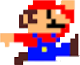
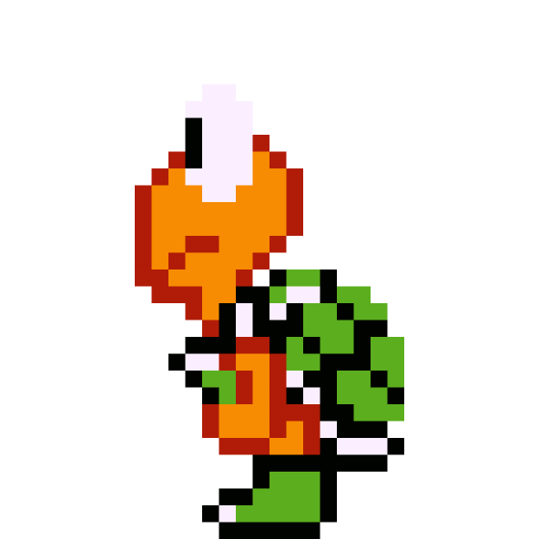

Ajude Marisilia a salvar a princesa Peachisilia capturada pelo Bowsilia.
Enquanto Marisilia caminhava em direção ao castelo na busca da princesa Peachisilia, ele se deparou com o primeiro inimigo.
Oque Marisilia faz?
1 - Dar um soco
2 - Pular